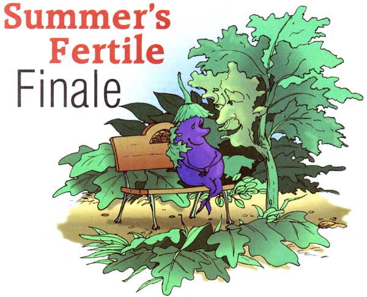
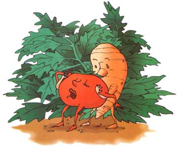

The garden is bursting with life this time of year ... tomatoes are fainting all over the sweet potatoes, and the kale trees are leaning suggestively into the eggplant.
In her glorious new cookbook Local Flavors, Deborah Madison answers the question of how to use everything she sees at the midsummer farmer's market: A long, Italian platter heaped with compatible vegetables-cooked and uncooked?and dressed with fresh herbs and olive oil. Right about now though, even a long Italian platter may not be enough to bail out the gardener whose ambition has come home to roost. My late husband titled one of his vividly evocative pastels "August Madness in the Garden." And it is. The garden is bursting with life this time of year, and the plants overwhelming my efforts to keep them within bounds?engage in Dionysian couplings. The tomatoes are fainting all over the sweet potatoes, and the kale trees are leaning suggestively into the eggplant.
These are the months when New York summer storms, hurrying through to drop their loads of water, pull behind them fresh mornings with a hint of fall. Before I go out to enjoy, I lecture myself in my journal: "Pull yourself together Joan and do something." That trace of coolness in the air tells me it isn't enough to graze myself sick on the produce, I've got to put some of it by for the months to come.
In most parts of the country, there's as yet no threat of frost pushing us to rush out and strip the garden. But the sudden, heavy rain that broke a dry spell cracked open whole clusters of cherry tomatoes. Right about now they and their larger neighbors are starting to rot on the vine. When the smell of spoiled tomatoes hits you every time you pass their beds, you know it's time to get a 5-gallon bucket for the rotted ones, a large basket or two for the savers and settle down to clean up the chaos.
So you do a careful job, and you come in the house carrying baskets and buckets not just of tomatoes, but of peppers and eggplants, and the herbs and greens you picked while you were at it. You want to store some of this for the winter. But where to start?
You have to start with the tomatoes, because they're the most fragile. There's time for the other produce later, though it's worth saying here that peppers simply cut into strips, dropped into a bag and then into the freezer will keep beautifully.
So will tomatoes, if the picking has used up your available time. Gail washes and dries tomatoes, puts them in plastic bags and freezes them?period. That's the easiest way to cope with excess. They can be thawed out to make juice or sauce later, when the garden slows down.
Next easiest, and most surprising, is to wash and dry the perfect cherry-size tomatoes, pack them in 16-ounce jars with basil leaves, add a pinch of salt and 2 tablespoons vinegar. Fill with olive oil, screw on lids and shake to mix. Store on the shelf. This recipe and hundreds of other alternatives to canning and freezing come from the farmers of France's Terre Vivante in a book titled
Keeping Food Fresh,
edited by Claude Aubert.
Drying tomatoes is something several of us do. In Tucson, Arizona, Barbara dries them on her roof, spreading the tomatoes on oiled screens under cheesecloth tents to foil the birds. Most places are too humid for that, and several of us have food driers. I grow a cherry tomato named 'Principe Borghese,' specifically for its dried sweetness. But my contribution to the easiest solution to tomato glut is the sauce described on
Page 99.
If you're a canner, make tomato juice. Mary gets together with friends and makes 40 to 50 quarts of tomato juice by cutting up all the fruit that's neither rotten nor moldy, cooking it down until it's soft, then put it through a food mill and can what comes out of the bottom. You also can freeze tomato juice, but 50 quarts would fill my freezer!
Mary's tomato juice party is a reminder that in most times and places food and community have gone together Mary also shares a peach gala in August. She and her neighbors put up 50 to 60 quarts of peaches each. When the children were young, moms came alone, a time to visit without interruption. Now, Mary says, the teen-agers those children have become actually do help. With midwinter peaches in their memory banks, they willingly blanch and skin.
Gail, who lives in a solar community surrounded by almond trees, speaks fondly of the community almond harvest that marks September. Sheets are laid under the trees, and a mechanical shaker brings down the nuts, which all the neighbors help gather and store.
A day spent putting things by provides a kind of security not available in the supermarket with its glossy hyperabun dance. When we talked about this time
of year, all of us agreed there's something very special about the storing-up process. it makes us feel, as someone said, as if we're going off the food grid, taking care of ourselves year-round.
With the harvest preserved, you can share the product. Jars of peach jam make wonderful Christmas presents. So do dried tomatoes. I once gave a nephew a box of assorted potatoes and a recipe for using them. In a time when so much makes us insecure about the future, there's a wa rm security in knowing you have food stored away just as autumn begins.
Thanks to advisers
Mary Anselmino, Michigan; Gail Feenstra, California;
Barbara Kingsolver, Arizona/Virginia; Toni Liguori, New York City; and Jennifer Wilkins, New York.
|
 Brian Orr |
 Brian Orr |
|